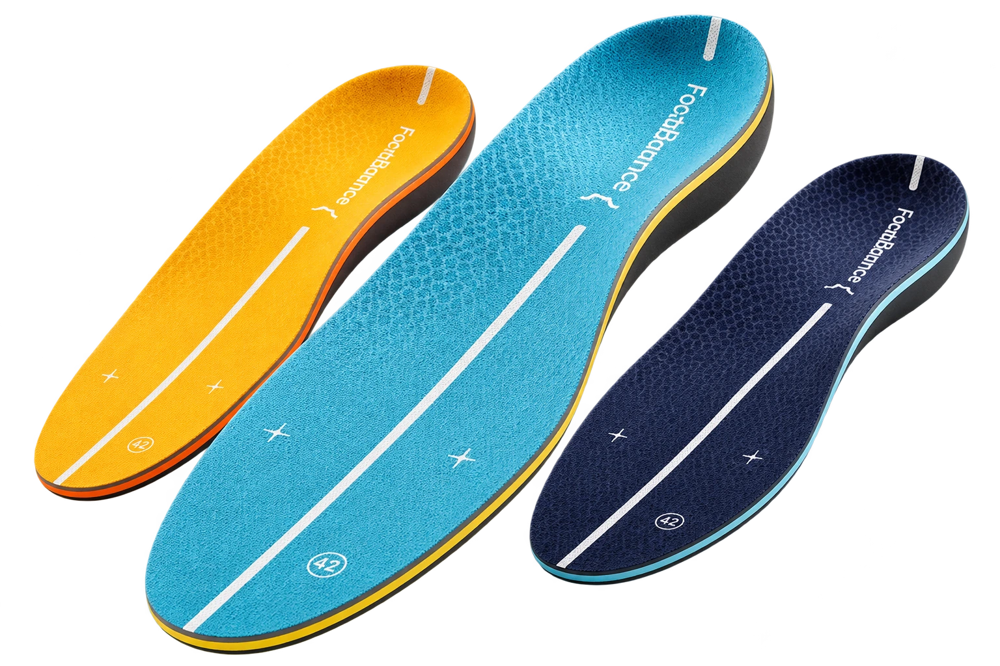
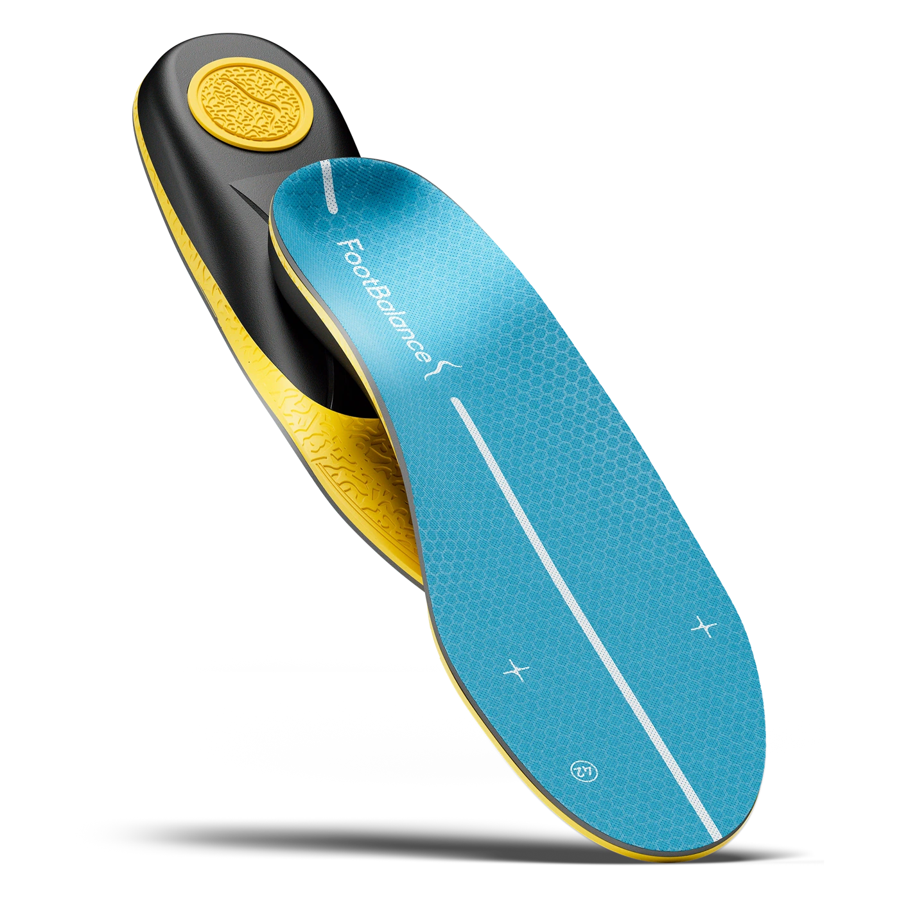
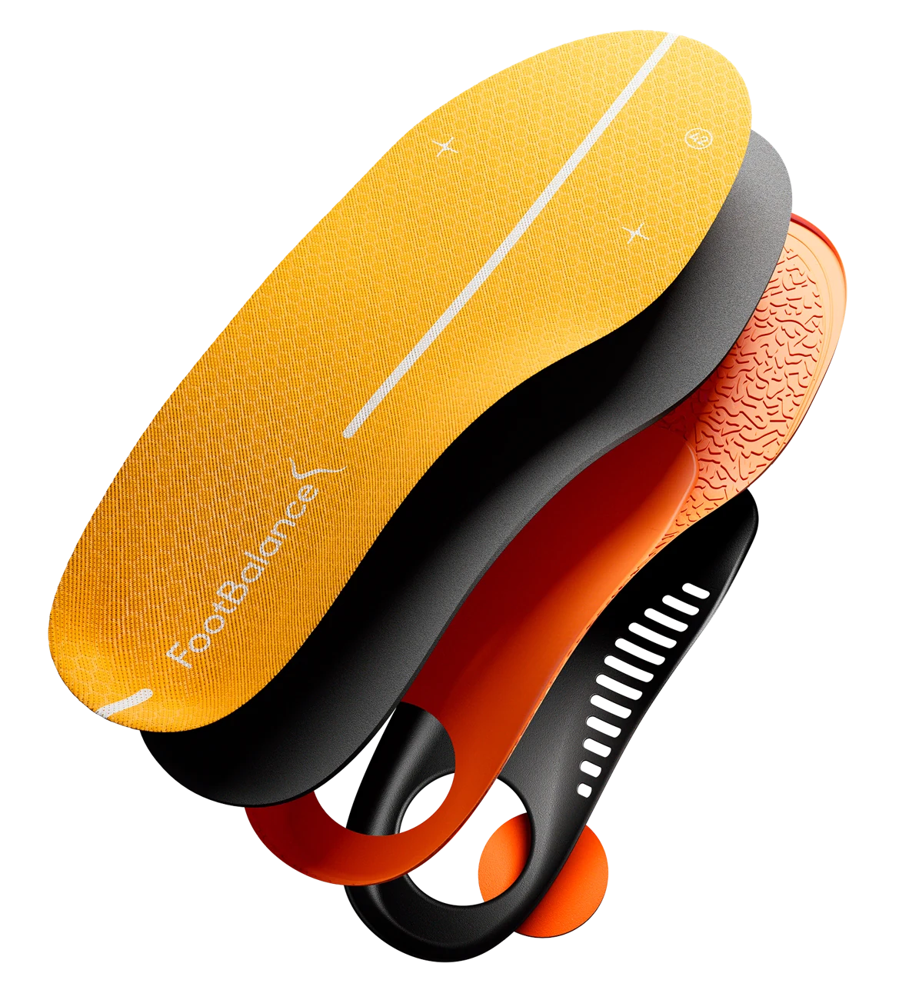
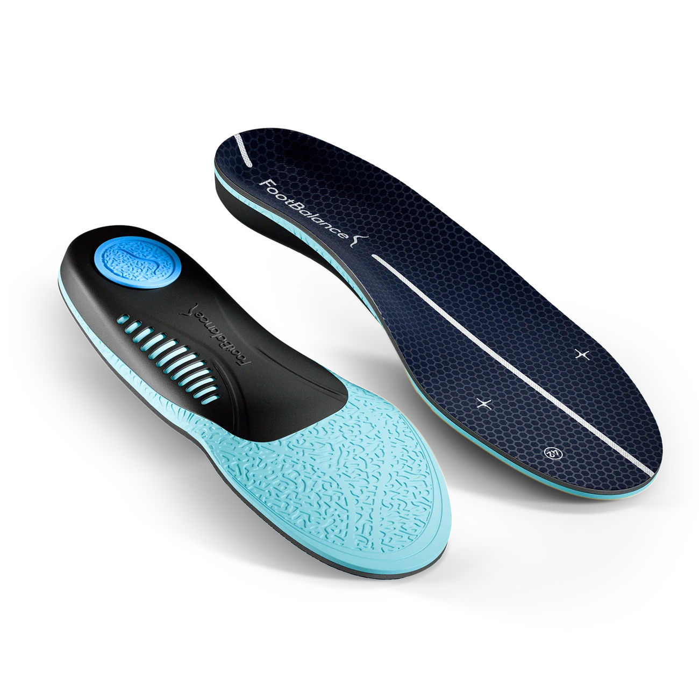
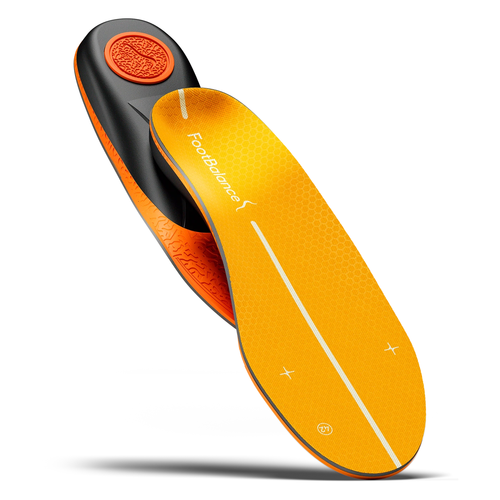
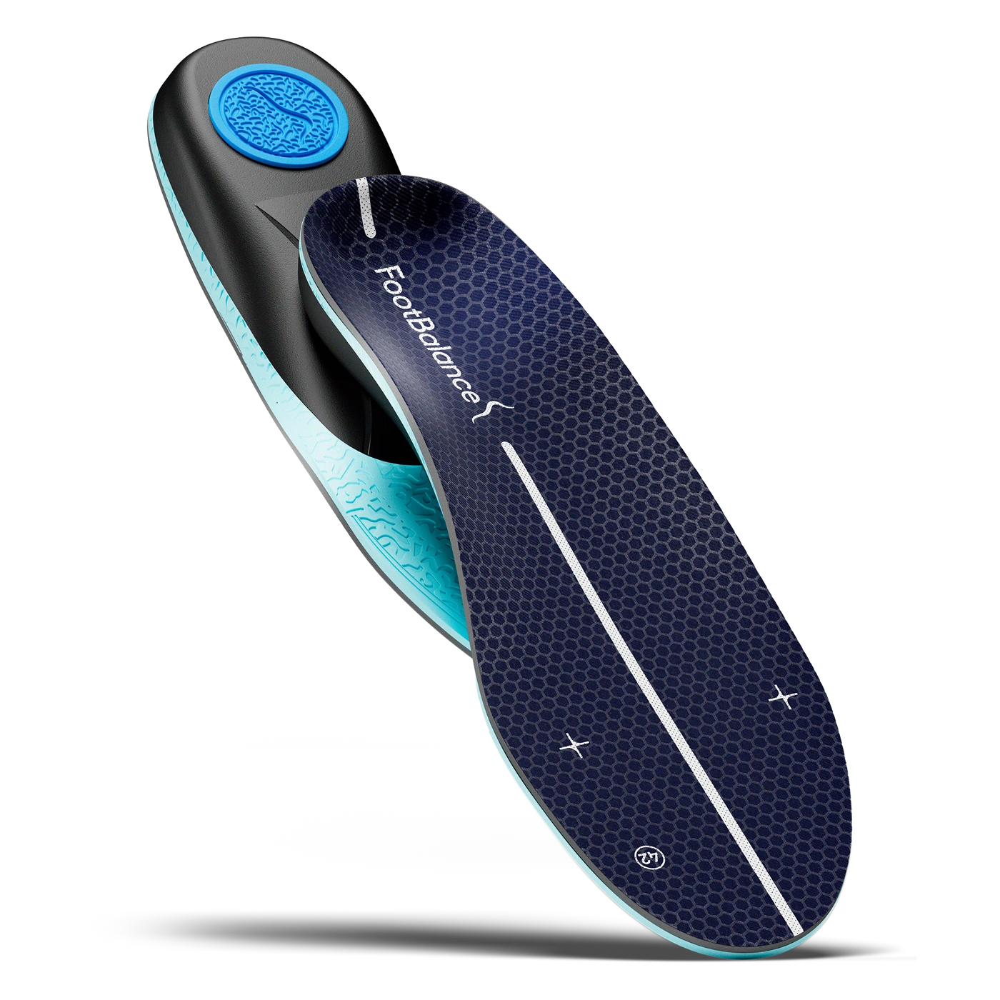
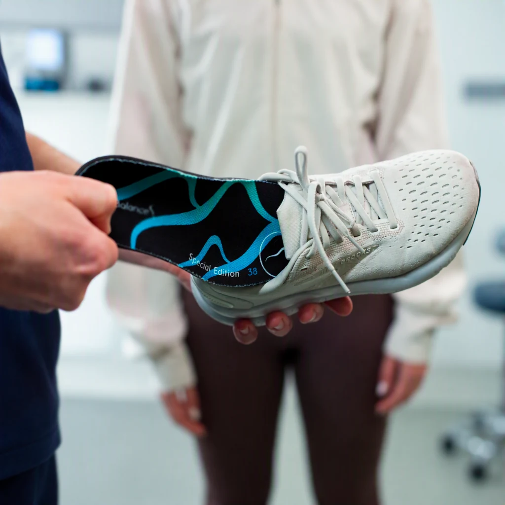
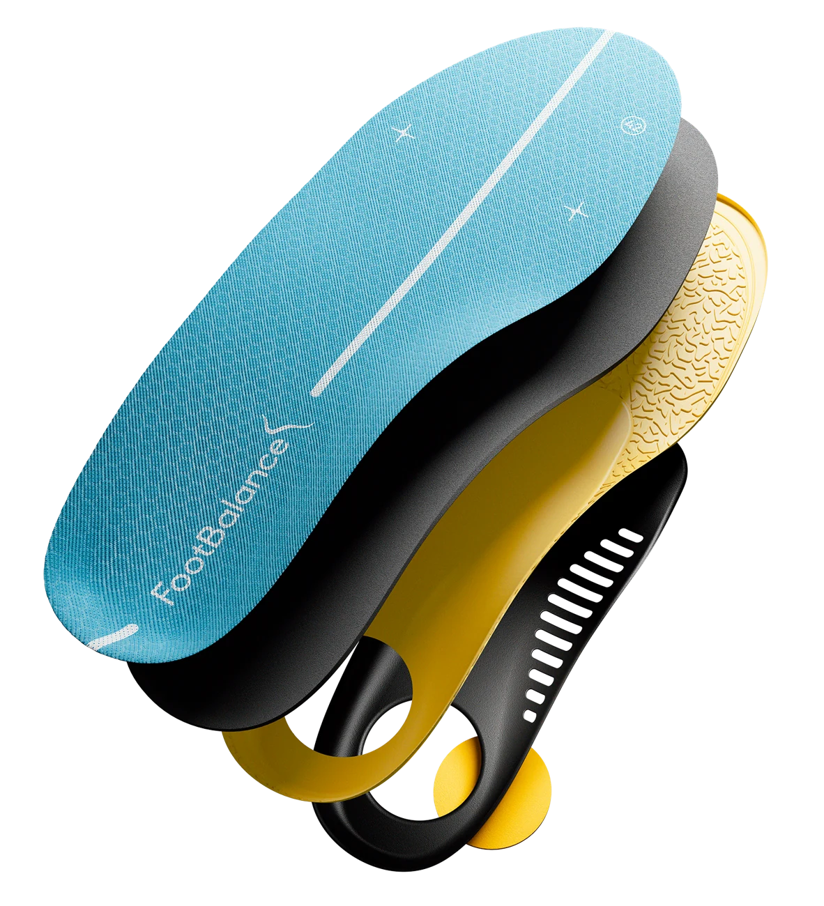

01 / YUMUŞAKLIK
Gün boyu.
İyi hisset.
Ayakta geçen zamanına yumuşak bir dokunuş. Konfor, yüksek yastıklamayı esnek kavis desteğiyle buluşturur.
Konfor’u keşfet

FOOTBALANCE SMARTFIT · HAZIR TABANLIK
Günlük adımlarına yumuşak yastıklama ve esnek destek ekle. Sevdiğin ayakkabının içinde, her gün hissetmek isteyeceğin bir fark.
4.900 TL · KDV dahil
KÜÇÜK BİR DEĞİŞİKLİK. HER ADIMDA BİR HİS.
Yüzeyden desteğe, her detay bir arada.
Ayakkabının içinde sana eşlik etmek için.
01 / YUMUŞAKLIK
Ayakta geçen zamanına yumuşak bir dokunuş. Konfor, yüksek yastıklamayı esnek kavis desteğiyle buluşturur.
Konfor’u keşfet
02 / DENGE
Dinamik yastıklama. Dengeli kavis desteği. Energy, spor ve hareketli günlerde aradığın ikisini bir araya getirir.
Energy’yi keşfet
03 / DESTEK
Daha güçlü kavis desteği ve stabil bir basış hissi arıyorsan Destek’i incele. Önemli olan, sana uygun his.
Destek’i keşfetSMARTFIT KOLEKSİYONU
Üç model. Üç farklı his. Tek fiyat.
Yumuşaklık, denge ya da belirgin destek: önceliğin hangisi?
Yumuşak bir güne adım at.
Günlük yürüyüş ve ayakta geçen zaman için yüksek yastıklama, esnek kavis desteği.

Tempona eşlik eden denge.
Spor ve hareketli günlerde dinamik yastıklama ile dengeli kavis desteğini bir araya getirir.

Desteği daha belirgin hisset.
Daha güçlü kavis desteği ve stabil bir kullanım hissi tercih edenler için geliştirildi.
36–47 numara seçenekleri · KDV dahil fiyat · 30 gün iade güvencesi
Kullanımını ve aradığın hissi söyle. İki soruda seçeneklerini daraltalım.
GÜNLÜK HAYATINA HAZIR.
Isıtma yok. Şekillendirme yok.
Üç küçük adımda ayakkabının içinde.

Ayakkabının içinde.SEÇMEDEN ÖNCE, UYUMU KONTROL ET.
Mevcut tabanlık çıkarılabiliyor ve içeride yeterli alan kalıyorsa SmartFit’i yerleştirip uyumunu kontrol edebilirsin.
SmartFit’i mevcut tabanlığın üstüne değil, yerine koy.
Topuk yerine oturmalı, ön kısım düz durmalı.
Ayağın sıkışmamalı; tabanlık içeride kaymamalı.
Numaranı seçmek kolay. Normalde giydiğin ayakkabı numarasının bulunduğu aralığı seç. Uyum belirsizliğinde satıcıdan teyit al.

SmartFit Konfor · KatmanlarıFARKI YAKINDAN İNCELE.
Basış hissi yalnızca üst yüzeyden gelmez. Katmanları ve alt yapıyı incele; model seçimini neye göre yaptığını gör.
Günlük kullanım için tasarlanmış yumuşak tekstil yüzey.
Daha yumuşak bir basış hissi tercih edenler için.
Günlük adımlarına eşlik eden esnek destek yapısı.
KARARIN, KENDİ ADIMLARINDA.
SmartFit, mevcut teklifte 30 gün koşulsuz iade güvencesiyle sunuluyor. Kararını verirken iade bilgilerini de incele.
SEÇMEDEN ÖNCE
Ürün, numara ve kullanım hakkında.
Yumuşaklık önceliğinse Konfor’u; yastıklama ve destek dengesini arıyorsan Energy’yi; daha belirgin kavis desteği istiyorsan Destek’i incele. Daha güçlü destek herkes için daha iyi anlamına gelmez.
Tabanlığı çıkarılabilen ve yeterli iç hacmi olan ayakkabılarda kullanılır. Mevcut tabanlığın yerine yerleştirip ayağının sıkışmadığını ve tabanlığın kaymadığını kontrol et.
Normalde giydiğin ayakkabı numarasının bulunduğu aralığı seç: XS 36–37, S 38–39, M 40–41, L 42–43, XL 44–45, XXL 46–47. Ara numara veya uyum belirsizliğinde satıcıdan teyit al.
SmartFit hazır tabanlıktır; kişiye özel üretilmez. Isıtma veya şekillendirme gerektirmez. Model yardımcısı tıbbi değerlendirme yapmaz.
Mevcut teklifte siparişler 1 iş gününde kargoya verilir. Bu süre kargoya teslim süresidir; adresine ulaşma süresi değildir. Bu tasarım önizlemesinde sipariş alınmaz.
SmartFit için 30 gün koşulsuz iade güvencesi sunuluyor. İade başvuru kanalı, kargo bedeli ve kullanım sonrası koşullar satışa açılmadan önce satıcı tarafından tamamlanacaktır.
KÜÇÜK BİR DEĞİŞİKLİKLE BAŞLA.
Hissini seç. Numaranı belirle. SmartFit’ini ayakkabına yerleştir.